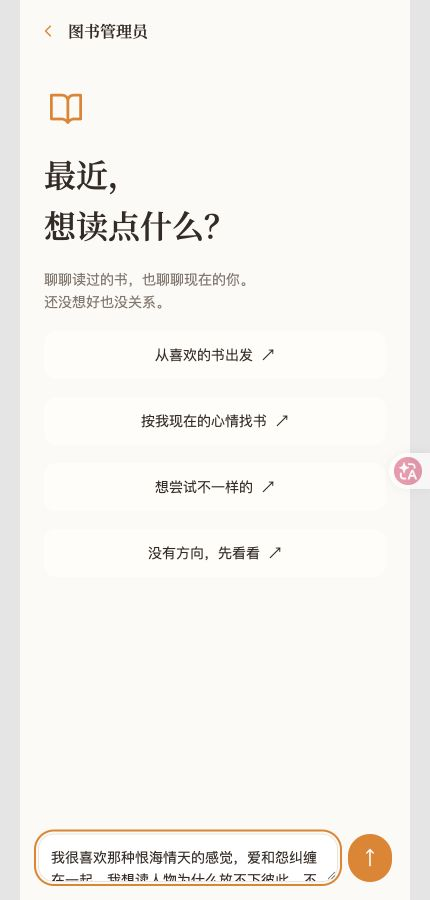
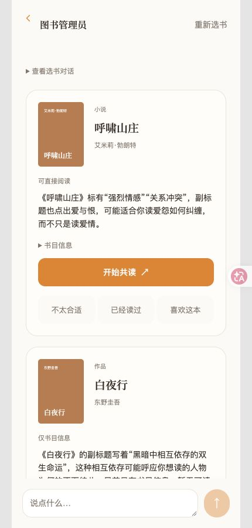
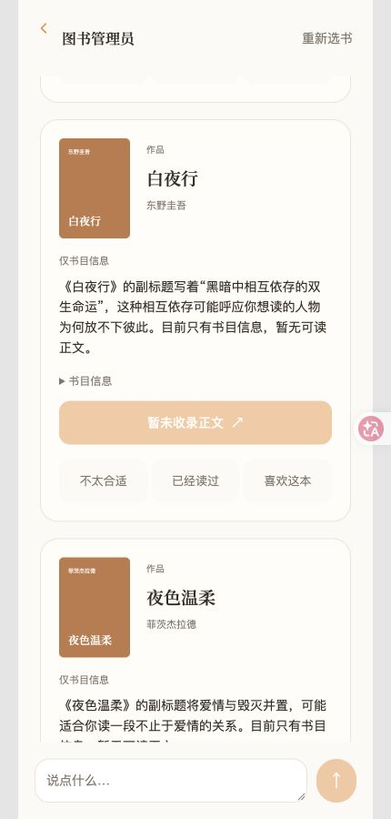
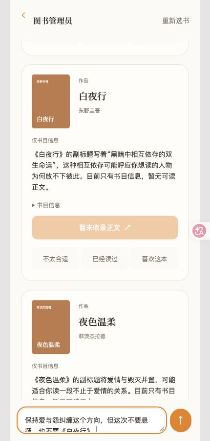
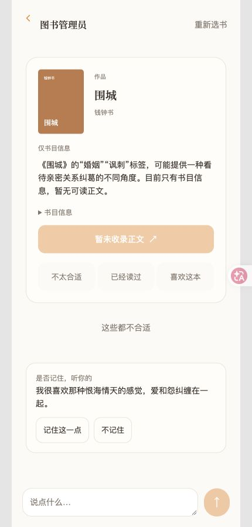
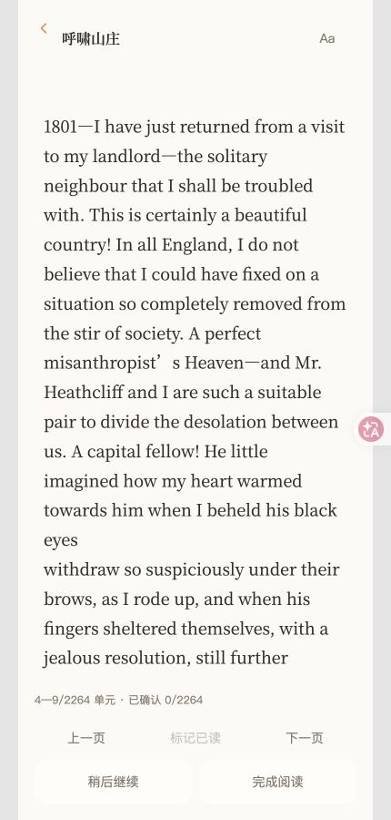

固定流程，
开放语义。
“恨海情天”无法只靠标签计分。模型负责理解、排序和解释；真实书籍 ID、排除项、权限与写入由规则检查。
23 个逻辑节点 ≠ 23 次模型调用。已有判断可以复用。AI PRODUCT CASE STUDY / 01
枢点 SHU 是一次关于阅读陪伴的产品实践。
先理解你此刻想要什么，再选书；读到哪里，就聊到哪里。
不只把一本书推荐给你，
也让你更容易开始、继续和回来。
THE ACTUAL DEMO
直接截取现有 Demo，保留原有橙色手机界面。
点击图片，可以查看原图。
第一轮：呼啸山庄 / 白夜行 / 夜色温柔。补充“不要悬疑，也不要白夜行”后：呼啸山庄 / 夜色温柔 / 围城。
首轮约 47 秒 · 调整约 32 秒 · 共 9 次模型调用（含 1 次记忆合并） · 费用估算 $0.1226。两轮推荐节点均成功，未发生模型降级；部分节点超过设计耗时预算。
查看本次用量与节点记录 ↗
未点名书籍，表达爱与怨纠缠、想理解人物为何放不下彼此。

首推《呼啸山庄》，说明与强烈情感、关系冲突的关联。

同时给出《白夜行》《夜色温柔》，标明是否有可读正文。

保留原方向，补充本次不要悬疑、不要《白夜行》。

新结果移除《白夜行》，增加《围城》；长期偏好仍需用户确认。

从结果进入《呼啸山庄》英文正文，本片未调用陪读回答模型。
录制于 2026.10.08 · gpt-6-sol / medium · 现有书库、独立演示会话、预先编写的演示需求。推荐文字是本次模型实际输出，未手工改写。视频由操作期间连续截帧生成，缩短各录制段之间的停顿，无配音；界面耗时单独记录。费用依据项目 2026.10.07 计价快照估算，并非账单。这是一条真实运行案例，不是推荐质量评测或生产性能结论。
PRODUCT × ENGINEERING
让模型承担理解，
让确定的规则守住边界。
“恨海情天”无法只靠标签计分。模型负责理解、排序和解释；真实书籍 ID、排除项、权限与写入由规则检查。
23 个逻辑节点 ≠ 23 次模型调用。已有判断可以复用。历史偏好不应盖过今天的需要。先检查记录是否有效，再判断它是偏好、回避依据，还是仅供理解的背景。
当前语义召回覆盖偏好记忆；状态与事件召回仍待扩展。从 Astra 的质量上限试验，切换到 Sol／medium 做批量评测准备。先用小样本记录真实用量，再决定扩大规模。
调用前预留预算；超时或无用量返回，不把已发生的费用记成零。EVIDENCE, WITH BOUNDARIES
阶段记录 · 2026.10.07
数据随项目进展更新。
验证了合成样本中的语义节点调用、数据契约、失败保护和成本计量。6 条推荐旅程未发生模型降级。
尚未证明真实书库的推荐质量、长期用户价值或生产级稳定性。小样本费用不是正式 120 条评测的预算。
MY ROLE & NEXT
我提出场景、节点职责和模型／规则取舍，借助 AI 完成代码实现、复核与测试，并持续区分设计、实际实现和已验证结果。
下一步：完善正式评测集，测试真实书库适配度，提升已读内容的语义检索能力。